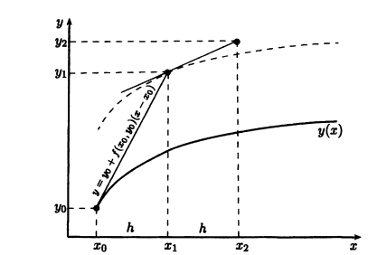

В этом разделе будем предполагать, что точное решение \(y(x)\) и правая часть дифференциального уравнения (функция \(f(x,y)\)) достаточное число раз непрерывно дифференцируемы.
Разложим \(y(x_1)\) по формуле Тейлора в окрестности точки \(x_0\): \[y(x_1) = y(x_0) + y'(x_0)h + y''(x_0)\frac{h^2}{2} + \cdots\]
Взяв в разложении несколько слагаемых и отбросив остальные, получаем тот или иной метод, при этом производные точного решения можно выразить в силу исходного уравнения. Например, простейший метод на одном шаге можно записать так: \[y_1 = y_0 + hf(x_0,y_0).\] Аналогично можно записать алгоритм при переходе к очередному узлу: \[y_{n+1} = y_n + hf(x_n, y_n),\] \[n = 0, 1, \cdots, N - 1.\]
Этот метод называется методом Тейлора первого порядка, чаще его называют \(\textbf{методом Эйлера}\). Геометрическая интерпретация метода Эйлера представляет собой движение по касательной к интегральным кривым.

Сходимость метода Эйлера рассмотрим чуть позже, а пока запишем метод Тейлора второго порядка.
Учитывая, что \[\frac{df(x,y)}{dx} = \frac{\partial f(x,y)}{\partial x} + \frac{\partial f(x,y)}{\partial y}\frac{dy}{dx},\] получаем \[y_{n+1} = y_n + hf(x_n ,y_n) + \frac{h^2}{2}[\frac{\partial f(x,y)}{\partial x} + \frac{\partial f(x,y)}{\partial y}f(x_n,y_n)].\]
Этот метод, называемый \(\textbf{методом Тейлора второго порядка}\), имеет существенный недостаток - необходимость считать частные производные, что предполагает аналитическую работу, которая ограничивает общность компьютерных программ. Аналогично можно выписать методы Тейлора третьего порядка, четвертого порядка и далее. И все эти методы, кроме метода Эйлера, обладают указанным недостатком.